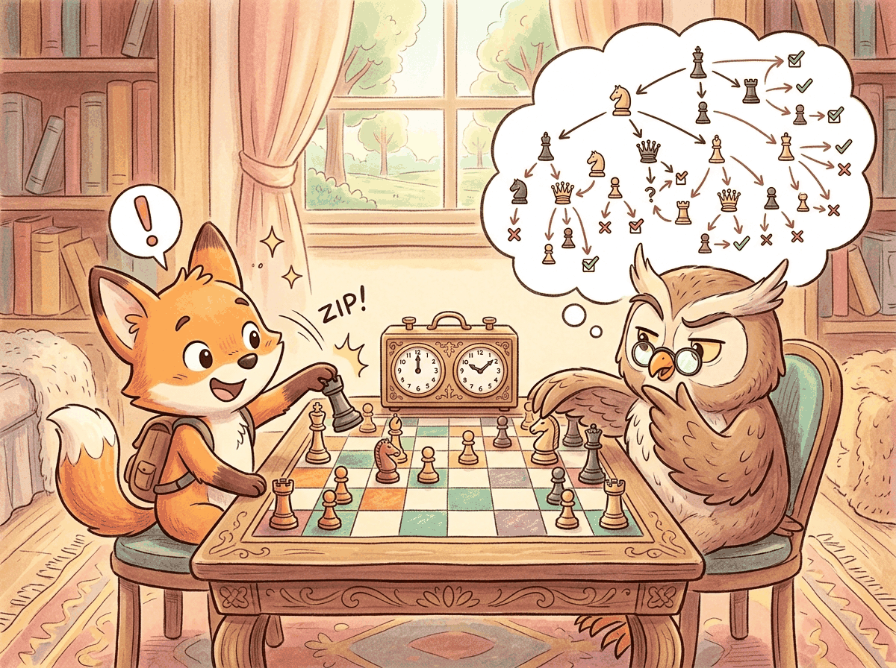

A wise person does not give the same amount of thought to choosing lunch as to choosing a career. Neither should a language model.
Chinchilla AI Agent
Prerequisites
This section assumes familiarity with scaling laws from Section 06.3 (Kaplan and Chinchilla scaling) and basic decoding strategies from Section 05.2 (sampling, temperature). No prior knowledge of reinforcement learning is required.
Why does test-time compute matter? Since 2020, the primary recipe for better language models has been to scale up training: more parameters, more data, more GPU hours. The Kaplan scaling laws (2020) and the Chinchilla correction (2022) formalized this, predicting performance as a smooth function of training compute. But by 2024, the frontier labs were running into practical ceilings: training runs costing hundreds of millions of dollars, energy consumption rivaling small cities, and data supplies approaching exhaustion. Test-time compute offers a complementary scaling axis. Instead of making the model bigger, you let it think longer on each problem. This chapter explores what that means, how it works, and when it is worth the cost. For the train-time scaling baseline, see Section 06.3.

1. Two Kinds of Compute Basic
Every language model consumes compute in two distinct phases. Understanding the distinction is essential for grasping why reasoning models represent a paradigm shift.
Train-time compute is the total processing power consumed during pre-training and post-training. This includes the GPU hours spent on next-token prediction over trillions of tokens, followed by supervised fine-tuning and alignment (see Chapter 17). Train-time compute is a one-time investment: once the model weights are set, the cost is amortized across every future inference request. Larger models with more parameters require proportionally more training compute, but serve every user with the same fixed set of weights.
Test-time compute (also called inference-time compute) is the processing power consumed each time the model generates a response. In a standard LLM, this cost is approximately proportional to the number of output tokens: each token requires one forward pass through the network. In a reasoning model, the cost per query can vary enormously. A simple factual question might consume 50 tokens of thinking, while a hard mathematical proof might consume 10,000 or more.
The fundamental innovation of reasoning models is adaptive compute allocation. A standard LLM spends roughly the same amount of computation per output token regardless of problem difficulty. A reasoning model allocates more "thinking tokens" to harder problems and fewer to easy ones. This mirrors how humans operate: you do not spend ten minutes deliberating over what to eat for breakfast, but you might spend hours reasoning through a complex legal contract.
1.1 The Classical Scaling Regime
The Kaplan scaling laws (2020) established that language model loss decreases as a power law in three variables: number of parameters N, dataset size D, and total training compute C. The Chinchilla correction (Hoffmann et al., 2022) refined this by showing that models should scale parameters and data equally: a model with N parameters should be trained on approximately $20N$ tokens for compute-optimal training.
These laws predict diminishing returns: doubling training compute yields a roughly 10% reduction in loss. To cut loss in half, you need to increase compute by roughly 100x. At the frontier, where training runs already cost $100M+, this creates severe economic pressure. (For the full derivation and historical context, see Section 06.3.)
1.2 The Test-Time Scaling Regime
Test-time compute scaling offers a fundamentally different trade-off. Instead of spending more at training to improve the model for all queries equally, you spend more at inference to improve the model's response to a specific query. This has several important properties:
- Per-query cost: Unlike training, which is amortized, test-time compute is a direct per-query cost. A reasoning model that generates 5,000 thinking tokens costs roughly 50x more than a standard model generating 100 tokens.
- Adaptive allocation: The compute can be allocated proportional to difficulty. Easy queries receive minimal thinking; hard queries receive extensive deliberation. This means the average cost per query can be much lower than the worst case.
- Complementary to train-time scaling: A model can be both well-trained and equipped with test-time reasoning. The two forms of scaling are additive, not substitutes. A reasoning model trained with more compute will reason better than a smaller one.
- Immediate deployment: Improving test-time scaling does not require retraining the model. Techniques like best-of-N sampling or tree search can be applied to any model at serving time (though purpose-trained reasoning models perform best).
2. The Snell et al. Framework Basic
The foundational paper for understanding test-time compute is Snell et al. (2024), "Scaling LLM Test-Time Compute Optimally can be More Effective than Scaling Model Parameters." This work provides the theoretical and empirical framework for answering a simple question: given a fixed compute budget for a single inference query, how should you allocate that budget between model size and test-time reasoning?
2.1 The Compute-Optimal Inference Problem
Consider a scenario where you have a fixed inference compute budget C FLOPs per query. You can spend this budget in several ways:
- Single pass through a large model: Use all C FLOPs for one forward pass through the largest model that fits within the budget. This is the classical approach.
- Multiple passes through a smaller model: Use a model that requires $C/N$ FLOPs per pass and generate N independent solutions, then select the best one using a reward model.
- Extended chain-of-thought with a medium model: Use a model that generates a long reasoning trace, spending extra tokens to "think through" the problem before committing to an answer.
- Tree search with a small model: Use a small model to explore a tree of partial solutions, using a reward model to guide the search toward promising branches.
Snell et al. show that the optimal strategy depends critically on task difficulty. Their key finding can be summarized in one sentence: on hard problems where a base model achieves less than 50% accuracy, test-time compute scaling with a smaller model can match or exceed a 14x larger model using the same total FLOPs.
2.2 Difficulty-Dependent Optimality
| Task Difficulty | Base Model Accuracy | Optimal Strategy | Rationale |
|---|---|---|---|
| Easy | >90% | Single pass, large model | Most samples are already correct; extra compute is wasted |
| Medium | 50% to 90% | Best-of-N (N=8 to 32) | Sampling diversity finds the right answer; reward model selects it |
| Hard | 10% to 50% | Extended CoT or tree search | Structured reasoning explores the solution space more efficiently than independent samples |
| Beyond capability | <1% | Larger model required | If the model lacks necessary knowledge, no amount of thinking helps |
The "think longer vs. be bigger" trade-off has a nice real-world analogy. Imagine you are trying to solve a crossword puzzle. If you are a native English speaker, a hard crossword benefits from thinking longer: more time lets you find connections between clues. But if the crossword is in Japanese and you do not speak Japanese, no amount of extra time will help. You need a fundamentally different skill set (a bigger model, metaphorically speaking). Reasoning models face the same constraint: they can only reason about knowledge they already possess.
3. Mechanisms of Test-Time Compute Basic
There are three primary mechanisms through which a model can invest additional compute at inference time. Each represents a different approach to the same goal: generating better answers by spending more processing per query.
3.1 Extended Chain-of-Thought
The most visible mechanism in modern reasoning models is extended chain-of-thought (CoT). The model generates a long sequence of "thinking tokens" before producing its final answer. These tokens represent the model's internal deliberation: breaking the problem into steps, considering alternatives, checking intermediate results, and sometimes backtracking when it detects an error.
In OpenAI's o1 and o3, these thinking tokens are hidden from the user (the API returns only a summary). In DeepSeek R1, the thinking process is visible, enclosed in <think>...</think> tags. The number of thinking tokens varies adaptively: a simple arithmetic question might generate 50 thinking tokens, while a competition-level math problem might generate 10,000+.
Why thinking tokens help, mechanically. A transformer is a fixed-depth computation graph: each input token passes through the same number of layers regardless of problem difficulty. By generating intermediate reasoning tokens, the model effectively gives itself additional "layers" of processing. Each thinking token feeds back into the context, allowing subsequent computations to build on earlier ones. This converts a fixed-depth computation into an adaptive-depth one, which is necessary for problems that require compositional reasoning (multi-step math, logical deduction, code debugging). The cost is linear in the number of thinking tokens, but the problems it unlocks are qualitatively different from what a single forward pass can solve. For deployment, this means the KV cache grows proportionally with thinking tokens, making efficient memory management crucial.
# Comparing standard vs. reasoning model outputs on the same problem
# Problem: "What is the sum of all prime numbers less than 20?"
# === Standard Model (GPT-4o) ===
# Output: "The prime numbers less than 20 are: 2, 3, 5, 7, 11, 13, 17, 19.
# Their sum is 2 + 3 + 5 + 7 + 11 + 13 + 17 + 19 = 77."
# Tokens generated: ~40
# Time: ~0.5s
# === Reasoning Model (o3-mini) ===
# Hidden thinking tokens (~200 tokens):
# "I need to find all primes less than 20.
# Starting from 2: 2 is prime.
# 3 is prime (not divisible by 2).
# 4 = 2x2, not prime.
# 5 is prime (not divisible by 2 or 3).
# 6 = 2x3, not prime.
# 7 is prime (not divisible by 2, 3, or 5). Actually I only need
# to check up to sqrt(7) ~ 2.6, so just check 2. Not divisible. Prime.
# ...
# [continues for all numbers up to 19]
# Now summing: 2+3=5, 5+5=10, 10+7=17, 17+11=28, 28+13=41,
# 41+17=58, 58+19=77.
# Let me verify: 2,3,5,7,11,13,17,19. Count: 8 primes. Sum: 77."
# Visible output: "The sum of all prime numbers less than 20 is 77."
# Total tokens (thinking + output): ~250
# Time: ~2s
# The reasoning model consumed ~6x more tokens but used a more
# systematic verification process. For this easy problem, both
# get the right answer. The difference becomes dramatic on harder
# problems where the standard model would make errors.3.2 Best-of-N Sampling
A conceptually simpler approach is to generate N independent solutions and select the best one. This requires a reward model (or verifier) that can score each candidate solution. The approach is "embarrassingly parallel" since all N candidates can be generated simultaneously on separate GPUs.
Performance scales logarithmically with N: doubling the number of samples yields a roughly constant improvement in accuracy. This means that going from N=1 to N=8 provides a large boost, but going from N=64 to N=128 provides a much smaller one. Practical systems typically use N between 8 and 64, balancing cost against accuracy.
3.3 Tree Search
Tree search methods, including Monte Carlo Tree Search (MCTS) and beam search variants, structure the reasoning process as an explicit search over partial solutions. Each node in the tree represents a partial chain of thought, and edges represent possible next reasoning steps. A reward model evaluates the promise of each partial solution, allowing the search to focus compute on the most promising reasoning paths.
Tree search is more compute-efficient than best-of-N for hard problems because it avoids wasting compute on completely wrong solution paths. If the first reasoning step is clearly wrong, tree search can detect this early (via the reward model) and redirect compute to better branches. Best-of-N, by contrast, generates each solution independently and can repeat the same mistakes across many of its N attempts.
We cover tree search in detail in Section 8.5, including AlphaProof's application of MCTS to formal mathematical reasoning.
4. The Economics of Thinking Intermediate
Test-time compute introduces a new dimension to the economics of LLM inference. The cost per query is no longer approximately fixed; it varies with problem difficulty and the chosen reasoning budget.
4.1 Token Costs
Reasoning models typically charge for both thinking tokens and output tokens, though the pricing structure varies. As of early 2025:
| Model | Input ($/1M tokens) | Output ($/1M tokens) | Thinking Tokens | Notes |
|---|---|---|---|---|
| GPT-4o | $2.50 | $10.00 | N/A (no thinking) | Standard model baseline |
| o3-mini | $1.10 | $4.40 | Included in output | Low/medium/high reasoning effort |
| o3 | $10.00 | $40.00 | Included in output | Highest capability reasoning |
| Claude 3.5 Sonnet | $3.00 | $15.00 | N/A (no extended thinking) | Standard model baseline |
| DeepSeek R1 | $0.55 | $2.19 | Visible in output | Open-weight alternative |
A critical detail: reasoning models generate far more tokens per query than standard models. A query that costs $0.001 with GPT-4o (100 output tokens) might cost $0.05 to $0.20 with o3 (1,000 to 5,000 thinking + output tokens). The per-token price of reasoning models is sometimes lower, but the total cost per query is typically 5x to 50x higher because of the additional thinking tokens.
4.2 The Routing Optimization
The wide variance in per-query cost creates a strong incentive for intelligent routing: sending easy questions to cheap, fast models and reserving expensive reasoning models for hard questions. This is not merely a cost optimization; it also improves latency. A simple factual query answered by GPT-4o-mini in 200ms is a better user experience than the same query sent to o3, which might take 5 to 15 seconds as it "thinks" about something that needs no thought.
Effective routing requires a difficulty estimator. This can be as simple as a logistic regression classifier trained on labeled query difficulty, or as sophisticated as a small language model fine-tuned to predict whether a reasoning model would produce a better answer than a standard model. The difficulty estimator itself is cheap to run (typically a single forward pass through a small model) and acts as a gatekeeper that protects the reasoning model from wasting compute on trivial queries.
Reasoning models can dramatically over-think simple questions. If you ask o3 "What is the capital of France?", it will still generate thinking tokens (perhaps 50 to 100) as it considers and verifies the answer. On a per-query basis, this waste is small. But at scale, if 80% of your traffic is simple queries, sending everything to a reasoning model means 80% of your inference budget is wasted on unnecessary deliberation. Always implement routing.
5. Historical Context: From Chain-of-Thought to Reasoning Models Basic
The reasoning model paradigm did not emerge in a vacuum. It builds on a decade of research into improving language model reasoning, with each advance building on the last.
- 2017: Scratchpad method. Nye et al. showed that letting models write intermediate computation steps (a "scratchpad") improved performance on algorithmic tasks. This was the first evidence that visible intermediate reasoning helps.
- 2022: Chain-of-thought prompting. Wei et al. demonstrated that simply prompting a model to "think step by step" dramatically improved reasoning accuracy. This required no model changes, just a prompt modification.
- 2022: Self-consistency. Wang et al. showed that sampling multiple chain-of-thought solutions and taking a majority vote improved accuracy beyond a single CoT sample. This introduced the idea that more inference-time samples yield better answers.
- 2022: STaR. Zelikman et al. proposed Self-Taught Reasoner, which iteratively fine-tunes a model on its own correct reasoning traces. This bootstrapping approach was an early precursor to training models specifically for reasoning.
- 2023: Process reward models. Lightman et al. (PRM800K) demonstrated that rewarding individual reasoning steps outperforms rewarding only final answers, laying the groundwork for step-level supervision in reasoning models.
- 2024: OpenAI o1. The first commercially deployed reasoning model, trained with reinforcement learning to produce extended chains of thought. Hidden reasoning tokens, RL-trained rather than prompt-elicited.
- 2025: DeepSeek R1. Open-weight reasoning model demonstrating that reasoning behavior emerges from pure RL (R1-Zero) without supervised CoT data. Introduced GRPO training and
<think>token delimiters. - 2025: Reasoning proliferation. Google Gemini 2.5 (thinking mode), Qwen QwQ, Kimi k1.5, o3, o4-mini. Reasoning capabilities become a standard feature rather than a niche capability.
Chain-of-thought prompting is covered in depth in Section 11.2. The reinforcement learning methods used to train reasoning models (PPO, GRPO) connect directly to the RLHF framework in Section 17.1. The scaling laws referenced throughout this section are derived in Section 06.3.
6. When to Use Test-Time Compute Basic
Not every task benefits from reasoning models. The following decision framework helps practitioners identify where test-time compute provides genuine value versus where it is wasted spend.
Use reasoning models when:
- The task requires multi-step logical reasoning (mathematical proofs, code debugging, legal analysis)
- The problem has a verifiable answer (math, code execution, constraint satisfaction)
- Accuracy is more important than latency (batch processing, offline analysis)
- The base model achieves 20% to 80% accuracy (the "sweet spot" for test-time scaling)
- Errors are expensive (medical reasoning, financial analysis, safety-critical systems)
Use standard models when:
- The task is primarily retrieval or summarization (factual lookups, document summarization)
- Latency matters more than marginal accuracy (real-time chat, autocomplete)
- The base model already achieves >90% accuracy (no room for improvement via thinking)
- The task is creative or subjective (writing, brainstorming) where there is no single "right" answer
- Cost per query is tightly constrained
Show Answer
A three-tier routing strategy:
- Tier 1 (85K queries/day): Route to GPT-4o-mini or similar fast, cheap model. These are FAQ lookups that need no reasoning. Estimated cost: ~$0.001/query = $85/day.
- Tier 2 (10K queries/day): Route to GPT-4o or Claude Sonnet. Moderate reasoning is handled well by standard frontier models. Estimated cost: ~$0.01/query = $100/day.
- Tier 3 (5K queries/day): Route to o3-mini with medium reasoning effort. Complex multi-step analysis. Estimated cost: ~$0.05/query = $250/day.
Total daily cost with routing: ~$435/day. If all 100K queries were sent to o3-mini: ~$5,000/day. The routing strategy saves roughly 91% of inference costs. The difficulty classifier can be trained on a labeled sample of 5,000 tickets and typically achieves 90%+ routing accuracy with a simple fine-tuned classifier.
Show Answer
Best-of-N sampling generates N independent solutions, each drawn from the same distribution. Because the samples are independent, the probability of at least one correct solution is 1 - (1-p)^N, where p is the per-sample success probability. This expression grows quickly at first but slows as N increases (logarithmic in effective accuracy gain per additional sample).
Tree search, by contrast, uses information from partial evaluations to guide future computation. If a reward model detects that the first reasoning step is wrong, tree search prunes that entire branch and redirects compute to more promising paths. This means tree search avoids the "repeated mistakes" problem of best-of-N, where many of the N independent samples might fail in the same way. The ability to prune early means that each additional unit of compute is spent more efficiently, particularly on hard problems where the correct solution requires finding a specific sequence of reasoning steps. This conditional information reuse is the property that enables super-logarithmic returns.
Show Answer
A latency-constrained extension would add a wall-clock time bound T_max to the optimization. The key new trade-off is between parallelism and sequential depth:
- Best-of-N sampling is highly parallelizable: with sufficient GPUs, N samples can be generated in the same wall-clock time as one sample. Under a latency constraint, this makes best-of-N attractive because it can use more compute without increasing latency.
- Extended chain-of-thought is inherently sequential: each token depends on all previous tokens. A 5,000-token thinking chain cannot be parallelized and takes 50x longer than a 100-token response. Under tight latency constraints, this limits the maximum reasoning depth.
- Tree search offers a middle ground: different branches can be explored in parallel (like best-of-N), but the depth of each branch can be adapted (like extended CoT).
The modified framework would have three variables: model size N, number of parallel samples K, and maximum sequential reasoning depth D, subject to both C_total = f(N, K, D) and T_wall = g(N, D). This creates a Pareto frontier in (cost, latency, accuracy) space. In practice, the latency constraint often eliminates deep sequential reasoning for interactive applications, pushing the optimal strategy toward parallel best-of-N with moderate model sizes.
For math, logic, and multi-step reasoning, simply adding "Let's think step by step" to your prompt can improve accuracy by 10 to 40%. For production, use structured chain-of-thought with explicit step numbering for more consistent results.
Key Takeaways
- Two dimensions of scaling: Train-time compute (bigger models, more data) and test-time compute (more thinking per query) are complementary axes for improving LLM performance.
- Adaptive compute allocation is the core innovation: reasoning models invest more tokens on hard problems and fewer on easy ones, unlike standard models that spend roughly equal compute per token regardless of difficulty.
- Difficulty-dependent optimality: On hard problems (10% to 50% base accuracy), a smaller model with test-time compute can match a 14x larger model. On easy problems (>90% accuracy), test-time compute is wasted.
- Three mechanisms: Extended chain-of-thought, best-of-N sampling with reward models, and tree search represent increasingly structured ways to invest inference compute.
- Economics favor routing: Because reasoning models cost 5x to 50x more per query, intelligent routing of easy queries to cheap models and hard queries to reasoning models is essential for production systems.
The optimal allocation of test-time compute remains an active research problem. Snell et al. (2024) showed that compute-optimal inference requires adapting strategy to problem difficulty, but the question of how to estimate difficulty before solving the problem is unresolved. Recent work on "scaling test-time compute with an approximate value function" (DeepMind, 2025) explores using lightweight models to predict how much thinking a query needs. Separately, "s1: Simple Test-Time Scaling" (Muennighoff et al., 2025) demonstrated that even simple budget-forcing techniques can significantly improve reasoning, suggesting that the full complexity of MCTS may not always be necessary. The emerging consensus is that adaptive compute routing, where different queries receive different inference budgets, will become standard in production LLM deployments.
Exercises
What is chain-of-thought (CoT) prompting, and why does asking a model to 'think step by step' improve performance on reasoning tasks? Give an example where CoT helps and one where it does not.
Answer Sketch
CoT prompting instructs the model to generate intermediate reasoning steps before the final answer. It helps because: (1) it breaks complex problems into simpler sub-problems. (2) Each step conditions on previous steps, allowing error detection and correction. (3) It allocates more compute (tokens) to harder problems. Helps: multi-step math ('A train travels 60mph for 2.5 hours, how far?'). Does not help: simple factual recall ('What is the capital of France?') or tasks where the answer is immediate and reasoning adds no value. CoT can actually hurt on simple tasks by introducing unnecessary complexity.
Compare zero-shot CoT ('Let's think step by step') with few-shot CoT (providing worked examples) on 10 grade-school math problems. Which approach achieves higher accuracy, and by how much?
Answer Sketch
Few-shot CoT typically outperforms zero-shot CoT by 5 to 15 percentage points because the worked examples demonstrate the specific reasoning format the model should follow. Zero-shot CoT still significantly outperforms direct answering (by 10 to 30 points). The quality of few-shot examples matters: examples should demonstrate the exact type of reasoning needed and use a consistent format. Poorly chosen examples can actually reduce accuracy.
When a model generates a chain-of-thought, it might reach the correct answer through incorrect reasoning, or the visible reasoning might not reflect the model's actual computation. Explain the 'faithfulness' problem and why it matters for trust in AI systems.
Answer Sketch
Faithfulness means the stated reasoning actually caused the final answer. Research shows models sometimes: (1) reach correct answers despite flawed reasoning steps (lucky cancellation of errors). (2) Generate post-hoc rationalizations rather than genuine reasoning (the answer was determined first, then justified). (3) Arrive at answers through internal computations not reflected in the text. This matters because: users rely on reasoning traces to verify answers; if the traces are unreliable, verification is illusory. For high-stakes applications (medical diagnosis, legal reasoning), unfaithful CoT creates a false sense of transparency.
Compare three structured reasoning approaches: (1) chain-of-thought, (2) tree-of-thought (exploring multiple reasoning paths), and (3) plan-then-execute (outline the approach before solving). For a complex word problem, which approach produces the best results?
Answer Sketch
CoT: linear reasoning, one path forward. Best for straightforward multi-step problems. Tree-of-thought: explores multiple approaches, backtracks from dead ends. Best for problems with multiple valid solution strategies (e.g., game playing, creative problem-solving). Plan-then-execute: first generates a high-level plan, then follows it step by step. Best for problems requiring strategic thinking before detailed computation (e.g., proofs, code design). For a complex word problem with potential traps, plan-then-execute often works best because identifying the right approach before computing prevents going down wrong paths.
Implement a simple 'verify-then-revise' pipeline: (1) generate a chain-of-thought solution, (2) prompt the same model to verify each step, (3) if errors are found, regenerate from the error point. Test on 20 math problems and measure whether verification improves accuracy.
Answer Sketch
The pipeline: generate solution, then prompt 'Check each step of the following solution for errors: [solution]'. If the verifier finds an error, regenerate from that step with the error flagged. Expected result: verification improves accuracy by 5 to 10 points, but the verifier itself is imperfect (catches ~60% of errors, sometimes flags correct steps as wrong). This is still valuable because the combined error rate (generator AND verifier both wrong) is lower than either alone. The fundamental limitation: the verifier uses the same model, so systematic biases affect both generation and verification.
What Comes Next
Now that we understand why test-time compute matters, Section 8.2 surveys the specific reasoning models that implement this paradigm: OpenAI's o-series, DeepSeek R1, Google Gemini 2.5 thinking mode, and others.
Snell, C. et al. (2024). "Scaling LLM Test-Time Compute Optimally can be More Effective than Scaling Model Parameters." arXiv preprint arXiv:2408.03314.
The central paper for this section, establishing when and how test-time compute scaling outperforms train-time scaling. Essential reading for understanding the compute-optimal inference problem.
Kaplan, J. et al. (2020). "Scaling Laws for Neural Language Models." arXiv preprint arXiv:2001.08361.
The original scaling laws paper that established the train-time compute paradigm. Understanding these laws provides the baseline against which test-time scaling is measured.
Hoffmann, J. et al. (2022). "Training Compute-Optimal Large Language Models." NeurIPS 2022.
The Chinchilla paper that corrected Kaplan's scaling laws, showing that models should be trained on 20x as many tokens as they have parameters.
Wei, J. et al. (2022). "Chain-of-Thought Prompting Elicits Reasoning in Large Language Models." NeurIPS 2022.
The chain-of-thought prompting paper that demonstrated the value of step-by-step reasoning, laying the conceptual foundation for reasoning models.
Wang, X. et al. (2023). "Self-Consistency Improves Chain of Thought Reasoning in Language Models." ICLR 2023.
Introduced self-consistency decoding (majority vote over multiple CoT samples), the conceptual precursor to best-of-N sampling with reward models.
Nye, M. et al. (2021). "Show Your Work: Scratchpads for Intermediate Computation with Language Models." arXiv preprint arXiv:2112.00114.
Early work showing that allowing models to write intermediate computation steps improves performance on algorithmic tasks.